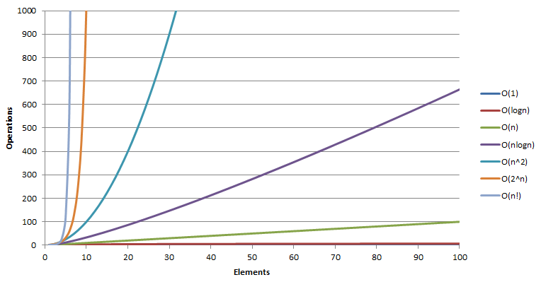

Algorithm
Table of Contents
1 复杂度

| 描述 | 特征 | ||
|---|---|---|---|
| $O(1)$ | 常数 | 大部分指令只执行有限常数次 | |
| $O(\log{N})$ | 对数 | 随着 N 的增会逐渐稳定，可以认为小于一个大的常数 | 将大的问题分解成一系列小的问题，每一步都将问题的规模缩减成几分之一 |
| $O(N)$ | 线性 | 对于必须处理 N 个输入的算法是最优的 | 对每个输入元素都进行有限常数次处理 |
| $O(N\log{N})$ | 将问题分解成子问题，独立地解决各个子问题，最后将结果综合起来 | ||
| $O(N^2)$ | 二次 | 需要处理输入数据项的二元组，很可能表现为一个嵌套循环 | |
| $O(2^N)$ | 指数 | ||
| $O(N!)$ | 阶乘 |
| 最坏情况性能 | 可以对程序的运行时间作出保证。 |
|---|---|
| 具有良好的最坏情况性能，是算法设计的一个基本目标。 | |
| 平均情况性能 | 可以对程序的运行时间作出预测。 |
要减少一个程序的运行时间，注意力应该集中在使内层循环的指令数最少。
要进行有效的分析，关键是要对应用建立一个合理的模型。算法分析的结果依赖于要针对的场景，如要检索的目标数据可能被检索到的比例，需要根据不同的场景选择不同的算法。
同一抽象概念的不同实现方法，可以导致极大的性能差异。即使一个库函数的执行性能良好，它也不能保证使所有的应用程序的性能都达到最佳。
2 方法
2.1 递归
int factorial(int n) { if (n == 0) return 1; return n * factorial (n - 1); } // 等价于 for (t = 1, i = 1; i <= N; i++) t *= i;
- 递归与其他方法相比，不能节省存储空间，也不会更快。
- 递归的优点是更紧凑，更容易写和读，有时可以避免对局部变量的需要。
- 最适合用于递归定义的数据结构，如树。
2.1.1 欧几里得算法
计算最大公约数：
A % B是A和B的最大公约数的整数倍A和B的最大公约数，等于B和A % B的最大公约数
int gcd(int m, int n) { if (n == 0) return m; return gcd (n, m % n); }
2.1.2 汉诺塔问题
把第 N 个盘子移到右边的方法：
- 递归地将 N 之上的所有盘子移到左边，
- 将 N 移到右边，
- 递归地将其他盘子移回到 N 之上。
void hanoi(int N, int d) // d = direction { if (N == 0) return; hanoi (N-1, -d); shift (N, d); hanoi (N-1, -d); }
2.2 分治法
- divide-and-conquer
- 一种泛型，使用两个递归调用，每一个调用处理输入一半的信息
2.2.1 求数组中最大元素
- 数组中的最大元素，等于前半部分中的最大元素，与后半部分中的最大元素中较大的一个。
- 递归地将数组平均分为两部分，找出每一部分最大的元素。
Item max(Item a[], int l, int r) { if (l == r) return a[l]; int m = (l + r) / 2; Item u = max(a, l, m); Item v = max(a, m, r); return (u > v) ? u : v; }
3 查找
| 时间复杂度 | |
|---|---|
| 顺序（线性）查找 | $O(N)$ |
| 二分（折半）查找 | $O(\log{N})$ |
| 无序数组的插入 | $O(1)$ |
| 无序数组的删除 | $O(N)$ |
| 有序数组的插入 | $O(N)$ |
| 有序数组的删除 | $O(N)$ |
3.1 顺序（线性）查找
不成功的查找需要 N 次检查，成功的查找平均需要 N/2 次检查。如果在已排序的表中进行查找，则不成功的查找也降至平均需要 N/2 次检查。
3.2 二分（折半）查找
适用于已排序的表。
int search(int a[], int v, int l, int r) { while (r >= 1) { int m = (l + r) / 2; if (v == a[m]) return m; if (v < a[m]) r = m - 1 else l = m + 1; } return -1; }
4 排序
| 最快 | 平均 | 最差 | 空间（最差） | 稳定性 | |
|---|---|---|---|---|---|
| Quick sort | $O(n\log{n})$ | $O(n\log{n})$ | $O(n^2)$ | $O(\log{n})$ | 不稳定 |
| Merge sort | $O(n\log{n})$ | $O(n\log{n})$ | $O(n\log{n})$ | $O(n)$ | 稳定 |
| Heap sort | $O(n\log{n})$ | $O(n\log{n})$ | $O(n\log{n})$ | $O(1)$ | 不稳定 |
| Tim sort | $O(n)$ | $O(n\log{n})$ | $O(n\log{n})$ | $O(n)$ | |
| Selection sort | $O(n^2)$ | $O(n^2)$ | $O(n^2)$ | $O(1)$ | 不稳定 |
| Bubble sort | $O(n)$ | $O(n^2)$ | $O(n^2)$ | $O(1)$ | 稳定 |
| Insertion sort | $O(n)$ | $O(n^2)$ | $O(n^2)$ | $O(1)$ | 稳定 |
| Shell sort | $O(n)$ | $O((n\log{n})^2)$ | $O((n\log{n})^2)$ | $O(1)$ | |
| Bucket sort | $O(n+k)$ | $O(n+k)$ | $O(n^2)$ | $O(n)$ | 稳定 |
| Radix sort | $O(nk)$ | $O(nk)$ | $O(nk)$ | $O(n+k)$ | 稳定 |
4.1 稳定性
两个相等的数，排序前在序列中的前后顺序，和排序后相同，则为稳定。
4.2 内部排序
待排序数据完全存放在内存中。适合不太大的元素序列。
4.3 Quick sort
- 选择一个特殊值（pivot）。
- 将所有数值按照大于或小于特殊值，分为两部分，递归排序每一部分。
- 将所有部分按顺序拼接起来。
- pivot 不能确保是中位数，最差情况需要 $O(n^2)$ 时间。
- 初始混乱度越低，性能越低，最差情况，即初始就是排序完成状态，需要 $O(n^2)$ 时间。
4.4 Merge sort
- 递归地将数组分为两部分，直到每一部分只剩一个元素（认为已经是有序的数组）。
- 不断合并两个有序数组，直到所有数组被合并。
基于分治法，类似 MapReduce。
4.5 Heap sort
创建一个最大（小）堆，不断从堆顶取出数值，组成排序后的数据。
4.6 Selection sort
每一次循环将未排序部分的最小（大）值移动到头部已排序部分，从前向后使序列逐步有序。
4.7 Bubble sort
不断比较两个相邻元素，如果后一个数值较小（大）则交换。
4.8 Insertion sort
在序列前 N 个数值已经有序的基础上，第 N 次循环时，将第 N+1 个数值移动到已排序部分的合适位置。
- 在第 N 次循环，将第 N+1 个数值与它前面的数值进行比较，
- 如果顺序不正确，则交换两个数值，继续向前比较，直到到达正确的位置。
- 渐进复杂度等于冒泡排序，但是性能更优，交换次数几乎是线性增加的。
- 适用于数据量很小，起始顺序混乱度低的场合。
4.9 Bucket sort
适合数值范围小或有限的排序。
4.10 Radix sort
将所有待比较数值（一般为整数）统一为同样的数位长度（数位较短的数前面补零），从最低位开始，依次进行排序。
- 时间复杂度为 $O(nk)$，其中 \(k\) 为数字位数。
- 适合数值范围小或有限的排序。